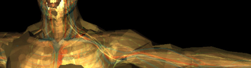

CodeCrafty
Hi I have a UrhoSharp app that when I load a model that has material list etc…
All that loads, but there are aliasing artifacts and you can see, (just barely) through the skin to the other body parts (muscles veins etc…)
Why would my materials have a partial transparency?
